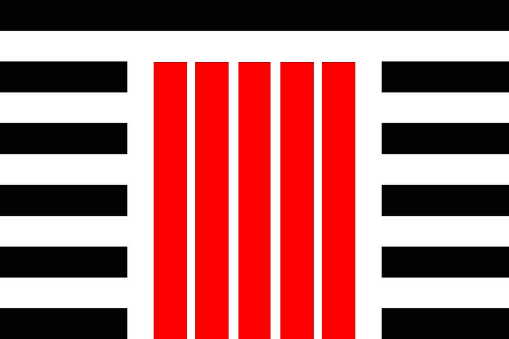

INTRODUCTION
Anarchism is, broadly speaking, a political philosophy which advocates the abolition of social hierarchies and all institutions which uphold them. This historically has meant an opposition to all forms of government, and typically is also understood to mean an opposition to any form of coercive power. Proponents of Anarchism occasionally quibble over semantic issues, such as how to best define what makes a social hierarchy unjust, or how to best promote the virtues of Anarchism on theoretical, moral, and economic grounds - but, generally, Anarchists advocate that the best possible form any society could take is that of one devoid of any kings, presidents, landlords, police, usurers, and anyone who seeks to subjugate others for their own benefit.
The largest Anarchist projects of the Nineteenth and Twentieth Centuries faced considerable physical and martial opposition from state power and other reactionary forces, but, the degree to which the historical Anarchist movement has been undercut by its own internal disarray also cannot be understated. As with any political project, an Anarchist movement will require a consistent theoretical line and a cohesive set of organisational principles.
Recognising this, by 1926, prevailing Russian Anarchists had developed an organisational theory called Platformism. Advocates of Platformism championed the need of Anarchist organisers to work within existing social structures and mass movements, and of the need of Anarchist organisers across disparate groups and communities to come to some agreement on a broadly shared political vision. These two organisational principles are correct, but they were tragically not implemented effectively, quickly, or widely enough to overcome the challenges Anarchism as a political cause would face throughout the rest of the Twentieth Century.
Today, the Anarchist movement in much of the world is a mere shadow of what it once was. Perhaps the place where it is currently strongest is South America, and in Uruguay in particular - where the tradition of Platformism has been adapted into a militant trade union-centric organisational model suited for conditions in Twenty-First Century South America which practitioners call 'Especifism'.
Much of the Left-Wing labour organising being done in the world right now, especially in the so-called "Global South" follows this Especifist model - and it had doubtlessly served many people well. This success, however, has misled many aspiring Progressive organisers into believing that the organisational tactics and methods developed by the Especifists in Uruguay and elsewhere can provide an easy one-size-fits-all solution for the challenges facing Anarchism in the developed world.
With more than a decade of experience in Left-Wing organising circles, I can comfortably say that the biggest stumbling block many hopeful and well-intentioned Leftists can't get over is an impulse to simply start copying the methods they've read about being used in far-off places and under totally different conditions. Organisational methods invented in Uruguay in the 1990s might work perfectly well for Uruguay in the 1990s, but they won't necessarily do anyone any good in a Western nation with minimal labour union participation and a largely complacent electorate today.
Hoping to address this, I have spent the better part of the last few years reflecting on my experience organising politically and proselytising Anarchist principles here in Australia in an attempt to articulate what could be perhaps the first serious effort to describe an organisational program unique and specific to the Twenty-First Century West. Anarchist organising doesn't strictly mean barracking for immediate worldwide revolution, it can be as grounded as simply pushing for meaningful, local, change on issues like public housing security or rent control, and running inclusive community events.
What ultimately matters is that you're striving to better the community around you from a position of principle, while also picking up a lot of good experience in simply organising events, meeting new people, and explaining why you see making your community a better place to be a worthwhile cause. To that end, I have condensed the methods and attitude I bring to my political organising down to six basic theoretical values and five simple organisational tenets - and in this document I intend to explain them and how to incorporate them into an Anarchist political project.
THEORETICAL AND ORGANISATIONAL PRINCIPLES
The form most of your political organising ought to take is essentially working with other people towards solutions for problems which presently exist within your community. This problem can be something broad and somewhat abstract like the rise of the cost of living, or something more specific and material like local government efforts to shutter a beloved public amenity. The specifics of how exactly you organise will vary depending on what the issue you're working around is, and myriad other factors that will change on a case-by-case basis. The basics of doing this are elaborated on further below under 'The Front Organisation', but regardless of the minutia of your political project, you'll need to start with a clear understanding of the ideological basis for the work you're doing.
Your theoretical principles are essentially the worldview your political organising is built on. Below are the six main precepts I espouse in my organising, which I believe are conducive to creating an effective political project in-line with specifically Anarchist principles, but which will undoubtedly sound broadly familiar and agreeable to anyone who so much as considers themselves remotely Progressive.
First and decidedly foremost is a belief in what I call "the dignity of the individual". That is the recognition that every person should have the inviolable right to live their life as they see fit without having their time or labour alienated from them, and without limits on their liberty and autonomy coercively dictated to them. An individual's access to sufficient food, clean drinking water, adequate shelter and all other human needs shouldn't be beholden to participation in an economic market or denied due to the circumstances of one's birth.
Subsequent to this is a conscious rejection of reactionary prejudices. The world presently is filled with systemic and interpersonal manifestations of racism, sexism, homophobia, transphobia and the like. Your political organising should acknowledge this and actively strive to create a environment in which such discrimination is not welcome.
To that end, the Anarchist organiser should also emphasise the rejection of partisanship along national, racial, or religious lines. Your political project should seek to alleviate the suffering of all regardless of their national or cultural background, and eschew divisive or sectarian identities antithetical to class consciousness.
Central to your organisational theory should also be an ethos of internal sufficiency. Your organisation simply cannot be all that effective if you lack the resources necessary for the sort of political work you're trying to do. This largely means not relying on external parties for materials you may need and minimising the extent to which you are ever beholden to people or conditions outside of your organisation.
I also advocate making an effort to avoid the common blunder of many Leftists in relying too heavily on grandiose utopian thinking. Far too many well-intentioned Progressives are quick to indulge in unrealistic speculation about what the future may hold or what any future society built on Anarchist principles might exactly look like. Not only is such speculation not conductive to your political project in the here and now, tacitly proscribing what such a future society might look like is not even particularly in-line with the Anarchist maxim that people should be free to dictate their own lives.
All the same, I also make sure to encourage a sense of genuine optimism about this sort of political project. You don't need to get bogged down in fantasies about the far future to envision positive change in the community around you. As previously mentioned, Anarchist organising isn't about immediate worldwide revolution, but about making meaningful change in accordance with these principles where you can - and you should feel good about that sort of work if you are pursuing an Anarchist political project. You should feel, ultimately, that the positive impact of that work practically justifies itself.
The aforementioned theoretical principles are the foundational beliefs I personally recommend anyone pursuing an Anarchist political project hold. Of course, the first concrete organisational practice I'll extol the benefit of is adhering to these theoretical values in your work - they wouldn't have any value as ethical foci if you didn't actually keep them in mind, of course.
Beyond that, however, there are other core organisational practices specific to the task of political organising itself that I think the aspiring Anarchist organiser should keep in mind. Primarily, making the target of your organising specific, local, issues you can readily define and realistically begin to address. It isn't helpful to set your sights on a nebulous goal like just unspecifically "improving" your community - your political project should have a definable area of interest and set itself achievable goals. More on this is outlined further down, again under 'The Front Organisation'.
Within your political organisation, your internal culture should prefigure the sort of societal values you want to be adopted by your community at large. In the case of an Anarchist political project, this should mean 'horizontal organisation', and self-management - whereby members of your organisation broadly decide the direction of their efforts through collective collaboration and work without any sort of hierarchical leadership.
I also wish to emphasise the need of any Anarchist collective project to thoroughly and proactively guard against the tendency for 'unofficial hierarchies' to form. Many Progressive political projects fall into the trap of relying on one outspoken or more experienced person, or a small faction or clique of people, who perhaps even unintentionally just seem to exert a particularly high degree of influence over the other people in the organisation. The fact that someone within your project is enthusiastic and shows a lot of initiative may seem great. However, allowing one person or a small minority of people to effectively control the direction of the project in practice is not only antithetical to Anarchism's base principles, it will only set the entire project up for failure should that person or group no longer be available to contribute to the group and everyone else ends up feeling directionless.
Relatedly, your political project should strenuously avoid becoming co-opted by, or begin to 'tail' another group or political project. Many independent Anarchist groups, particularly after they've begun to see some modest success, are often the target of other political interests with incompatible viewpoints - like wannabe-Leninists and Electoralist Liberals - who might seek to court members of your organisation or otherwise subvert it and its goals. Suffice to say, you should do you utmost to not allow this to happen, and you should be aware that compromising your Anarchist organisation's specifically-Anarchist values is virtually tantamount to its destruction.
In the past, when I've been asked to instruct aspiring activist groups about these theoretical and organisational principles, I've used a flag or banner as a visual representation or mnemonic aide. As shown below - the field or background is white, representing peace and harmony; six equidistant, punctuated, horizontal black bars represent the core Anarchist theory I espouse; and five central red columns the organisational precepts.

THE FRONT ORGANISATION MODEL
As alluded to earlier, the general organisational model I advocate is one adapted from the techniques of Third-World Especifists to suit the needs of Progressives in the Twenty-First Century West. The basic premise of the model is that a relatively small cell of committed Anarchists should be capable of starting standalone larger organisations, focused on specific issues, open to and actively seeking public participation.
To give a realistic example: say you have an initial group of between four to twelve people familiar with the concept of political organisation who can agree on a set of basic theoretical Progressive principles such as those outlined above. This group can identify an area of political interest (ie. housing availability or LGBT rights), then create a front organisation centred around that issue which can campaign for positive outcomes related to your cause.
The exact outcomes you'll be seeking, and what means will be most suitable for achieving them, can vary drastically depending on your local conditions. It will be up to your political project to define for itself what things like your horizontal internal structure looks like and what your media and communications strategies will be - there really isn't an easy, prescriptive, singular solution for things like that.
Regardless, the work you and your fellow Anarchist organisers do will hopefully begin to make some meaningful positive changes in your local community. And even projects or campaigns you undertake that don't fulfill all of the outcomes you had hoped for still ought to be providing your group with a lot of hands-on, practical, experience at this sort of work.
updates to come
last major update: September 2024